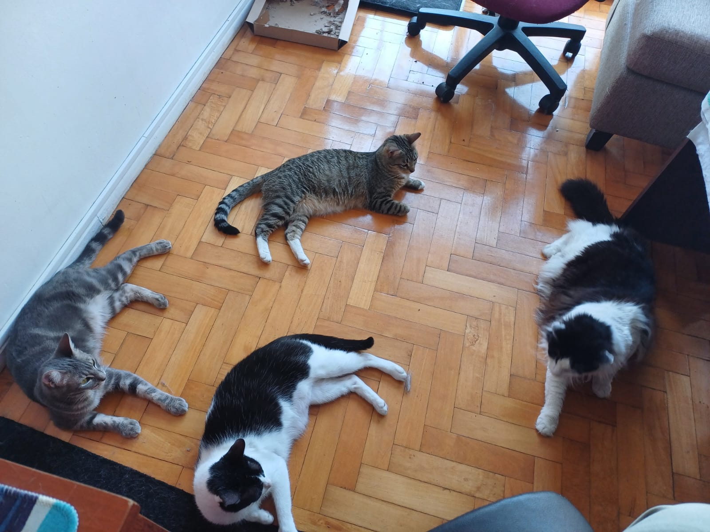

Bienvenidos!
Esta página está dedicada a mis cuatro compañeras felinas:
Todas ellas fueron adoptadas por mí y mi pareja. Todos los días reciben amor y afecto. Desde que están con nosotros alegran nuestros días con sus juegos, con sus miradas y con la personalidad única que las distingue a cada una.
Aunque son de distintas edades, ellas formaron su propia manada/familia.